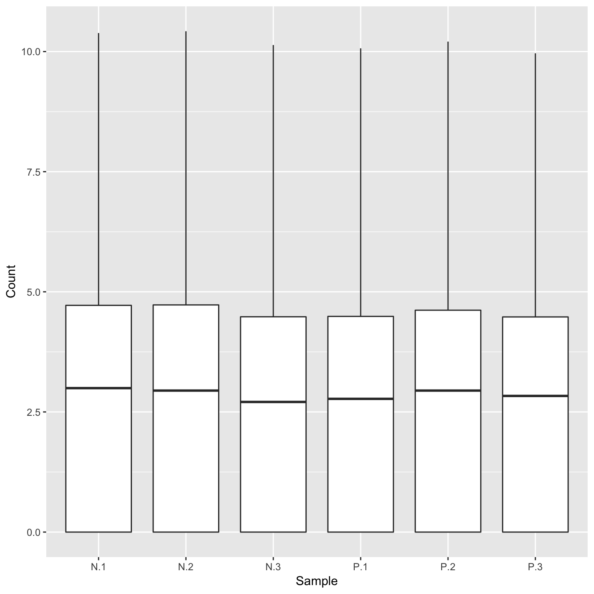
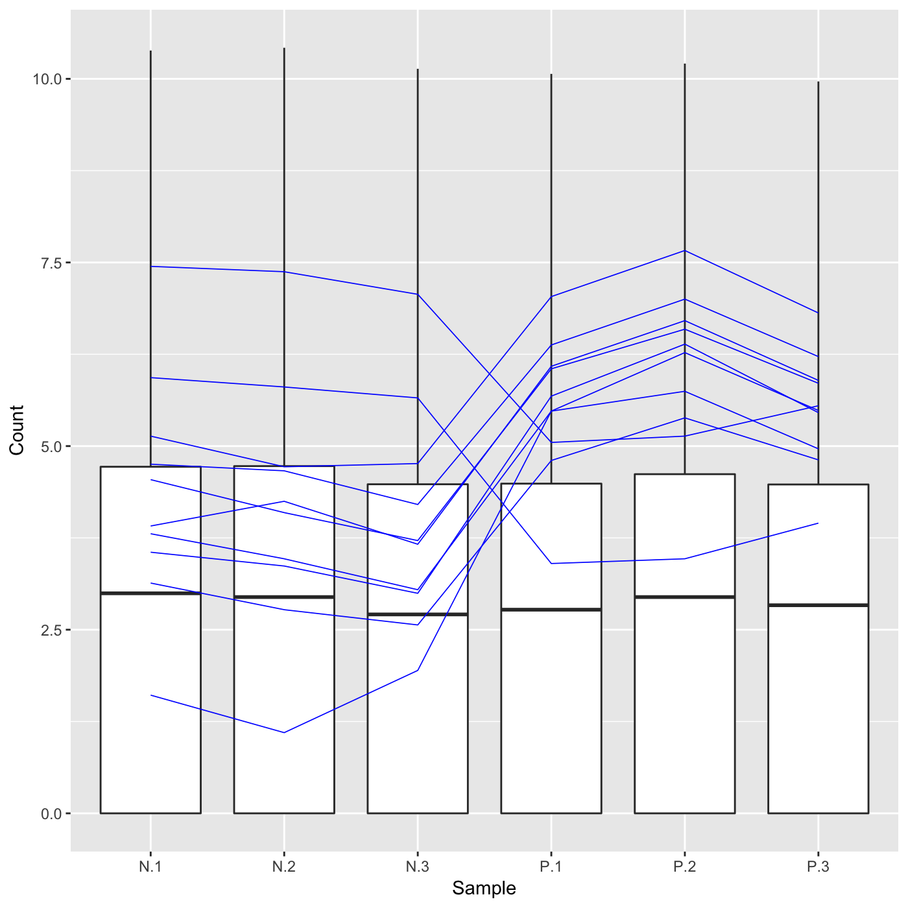

Plot static parallel coordinate plots onto side-by-side boxplot of whole dataset.
plotPCP(data, dataMetrics = NULL, geneList = NULL, threshVar = "FDR", threshVal = 0.05, lineSize = 0.1, lineColor = "orange", vxAxis = FALSE, outDir = tempdir(), saveFile = TRUE, hover = FALSE)
Arguments
| data | DATA FRAME | Read counts |
|---|---|
| dataMetrics | LIST | Differential expression metrics; If both geneList and dataMetrics are NULL, then no genes will be overlaid onto the side-by-side boxplot; default NULL |
| geneList | CHARACTER ARRAY | List of gene IDs to be drawn onto the scatterplot matrix of all data. If this parameter is defined, these will be the overlaid genes to be drawn. After that, dataMetrics, threshVar, and threshVal will be considered for overlaid genes. If both geneList and dataMetrics are NULL, then no genes will be overlaid onto the side-by-side boxplot; default NULL |
| threshVar | CHARACTER STRING | Name of column in dataMetrics object that is used to threshold significance; default "FDR" |
| threshVal | INTEGER | Maximum value to threshold significance from threshVar object; default 0.05 |
| lineSize | INTEGER | Line width of parallel coordinate lines; default 0.1 |
| lineColor | CHARACTER STRING | Color of parallel coordinate lines; default "orange" |
| vxAxis | BOOLEAN [TRUE | FALSE] | Flip x-axis text labels to vertical orientation; default FALSE |
| outDir | CHARACTER STRING | Output directory to save all plots; default tempdir() |
| saveFile | BOOLEAN [TRUE | FALSE] | Save file to outDir; default TRUE |
| hover | BOOLEAN [TRUE | FALSE] | Allow to hover over points to identify IDs; default FALSE |
Value
List of n elements of parallel coordinate plots, where n is the number of treatment pair combinations in the data object. The background of each plot is a side-by-side boxplot of the full data object, and the parallel coordinate lines on each plot are the subset of genes determined to be superimposed through the dataMetrics or geneList parameter. If the saveFile parameter has a value of TRUE, then each parallel coordinate plot is saved to the location specified in the outDir parameter as a JPG file.
Examples
# Example 1: Plot the side-by-side boxplots of the whole dataset without # overlaying any metrics data by keeping the dataMetrics parameter its # default value of NULL. data(soybean_ir_sub) soybean_ir_sub[,-1] = log(soybean_ir_sub[,-1] + 1) ret <- plotPCP(data = soybean_ir_sub, saveFile = FALSE) ret[[1]]# Example 2: Overlay genes with FDR < 1e-4 as orange parallel coordinate # lines. data(soybean_ir_sub_metrics) ret <- plotPCP(data = soybean_ir_sub, dataMetrics = soybean_ir_sub_metrics, threshVal = 1e-4, saveFile = FALSE) ret[[1]]# Example 3: Overlay the ten most significant genes (lowest FDR values) as # blue parallel coordinate lines. geneList = soybean_ir_sub_metrics[["N_P"]][1:10,]$ID ret <- plotPCP(data = soybean_ir_sub, geneList = geneList, lineSize = 0.3, lineColor = "blue", saveFile = FALSE) ret[[1]]# Example 4: Repeat this same procedure, only now set the hover parameter to # TRUE to allow us to hover over blue parallel coordinate lines and # determine their individual IDs. ret <- plotPCP(data = soybean_ir_sub, geneList = geneList, lineSize = 0.3, lineColor = "blue", saveFile = FALSE, hover = TRUE) ret[[1]]